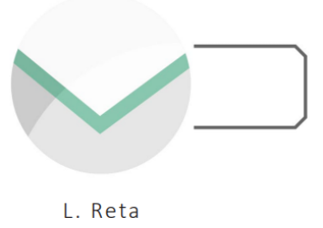
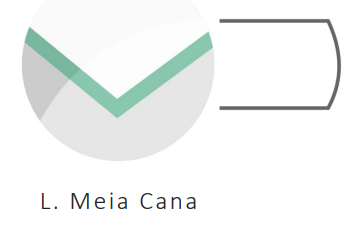
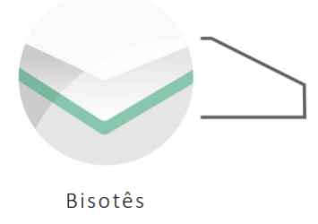
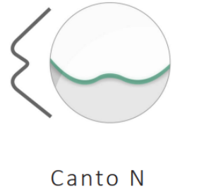
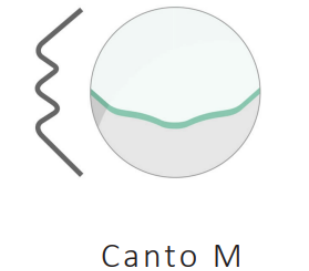
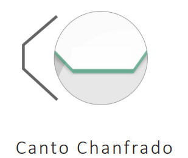
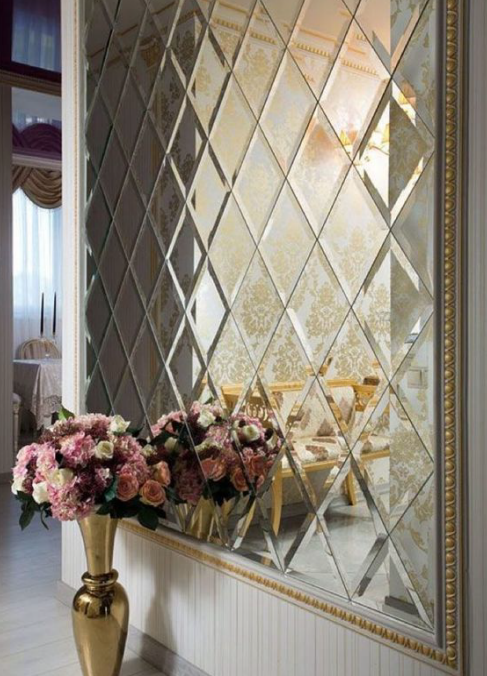

Bisotês, Lapidação e Cantos
A lapidação é um processo utilizado para a modelagem do vidro aplicado
às suas bordas de modo que a sua resistência seja aumentada e o corte
seja retirado, tornando-o mais seguro ao manuseio.
O acabamento de bisotê confere sofisticação ao vidro ou espelho, por
isso é muito solicitado na indústria moveleira e por profissionais da área
de decoração. O bisotê refere-se a um corte chanfrado nas extremidades
do vidro que, em seguida, recebe um polimento desenvolvendo textura
e brilho natural.
Quando se trabalha com vidros lapidações, cantos ou bisotês bem executados
diferenciam e destacam os bons produtos. A Oliver Vidros está equipada com os
mais modernos equipamentos de furação e lapidação de vidros.
São cinco tipos de lapidações e inúmeras possibilidades de recortes de canto,
além de furações, em vidros e espelhos à disposição de nossos clientes.
Exemplos de Acabamento

Reto
Acabamento reto com polimento.

Meia-cana
Perfil arredondado, ideal para tampos e prateleiras.

Bisotê
Canal elegante para decoração de espelhos e painéis.

Canto N
Cantos personalizados para maior segurança.

Canto M
Acabamento fino e discreto.

Chanfrado
Ideal para aplicações que exigem visual técnico.
Aplicações
Utilizados em portas de móveis, tampos, espelhos decorativos, nichos e painéis. Nossos acabamentos unem estética e durabilidade.
- Moveleiro residencial
- Decoração comercial
- Esquadrias internas

Acesse nosso catálogo completo clicando AQUI